Models of Configuration Management
Who am I?
- PHP developer since 2004
- Lead Architect at Bounteous
We're hiring: bounteous.com/careers
Who are you?
Story
Takeaways:
- 4 Config Synchronization Models
- 4 Config Split Models
- 5 ways a config can be split
- How to make decisions about the above
Overview
- Principles of Config Management
- Config Synchronization Models
- Config Split Models
- Challenges In Practice
I. Principles of Config Management
What is configuration?
Configuration is...
- Site configurations (site name, performance settings)
- Schema (content types, fields, etc)
- Plugin configs (payment methods, SOLR)
- Content (page manager, block placement)
... it’s a little squishy.
Why does it need managed??
What happens when you don't...
- Have you ever made schema changes manually on PROD because you didn’t have a good way to script them?
- Have you worked with Magento, WordPress, Oro, or pretty much any framework without a config manager?
- Have you used Drupal 7 features?
Oh, I forgot to tell you some manual steps...
Basics of Drupal Configuration Management
By default, all configuration is managed.
drush cim sync
drush dex sync
Managed vs Unmanaged Configuration
- Managed: Config that is under version control and deployed, it is imported and exported. (default)
- Unmanaged: Config that is treated as state in the database, it is ignored by import/export.
Clean configuration
When the managed configuration in the database exactly matches that in version control.
drush config-status
Synchronization directory
The location a site imports from and exports to by default; there is only one.
Split directory
The location of configuration that, when enabled, merges into the synchronized config; there can be many.
Now, some principles...
Principle 1: Manage your config.
A corrolary says this:
Always version your database.
— K. Scott Allen
This means use the config management system, which could be at the site level, install profile level, or core/contrib level.
This is why update hooks exist!
Principle 2: Config that changes should be unmanaged.
Use config ignore and config export ignore to remove config that changes.
Some examples:
- Block placement (block.block.*)
- Modules that are using config instead of state (key/value), e.g. Acquia's Connector which was recently fixed
- Config you want a site admin to edit live (webform.*, tb_megamenu.menu_config.*)
Principle 3: Keep production config clean.
Never edit managed config on production.
drush config-status
This should always show no changes.
If there are changes, either allow it to be reverted on deploy or export the values to the canonical store of config.
Consider using config readonly.
Principle 4: Declare 1 canonical source of managed config.
Typically, this is the "develop" branch. All changes branch off the canonical and are merged back into it, just like any other code changes.
Note: production's database is canonical only for unmanaged config!
Principle 5: Reset your local config to the canonical before making changes.
Consider a "reset" script that is run every time you change branches:
- Run composer install
- Copy canonical database into your local
- Run database updates (drush updb)
- Run config import, twice (drush cim sync)
- Now, you are ready to make changes
Principle 6: Import config twice on deploy
Changes to how your config is managed are not reflected until the second import.
(I've not seen any indication this will change.)
Principle 7: All sites sharing config synchronization should be 80%.
If using a configuration sync directory with multiple sites, there should be 80% overlap between the sites functionality.
Otherwise, have each site with its own config sync directory or manage a very small amount of config in a profile.
Principle 8: Commodity sites should have few managed configs, Collectibles should have many.
A "Commodity" site is the primary use case of Acquia Site Factory (ACSF). You install a site profile and some modules and let a Site Builder role take over. In this case, manage as little config as possible.
A "Collectible" site is what most people are used to. You install a site profile, but iterate over the site's configuration. You want to manage as much as possible for quality control.
Two categories of config models:
- Synchronization Models: for your site's entire set of config.
- Split Models: for splitting out differences on a module or config-entity level (e.g. per-environment split of dblog).
Pick 1 synchronization model, layer on split models as you like.
Configuration Synchronization Models
Config Synchronization Models
- Globally Shared Management (default): All sites share the config set.
- Profile Shared Management: All sites of the same profile share the config set.
- Separate Management: All sites have their own config set.
- Unmanaged: No configurations are managed in code.
Model 1: Globally Shared Management

This is the default model.
Model 2: Profile Shared Management

Model 3: Separate Management
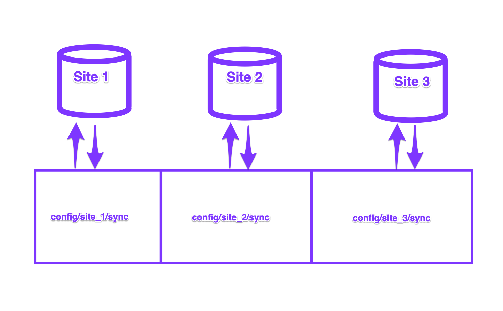Model 4: Unmanaged
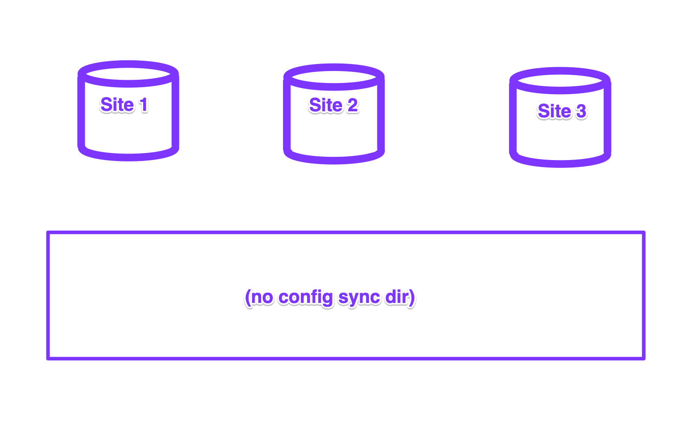Config Split Models
- Environment Splits: Allows DEV to have different config than PRD.
- Site Splits: Allows sites to have different config than what is in synchronization.
- Profile Splits: Allows all sites of a given profile to have different config than what is in synchronization.
- Module Splits: Allows sites with a given module to have different config than what is in synchronization.
Synchronization Models and Split Models Work Together
| Env Splits | Site Splits | Profile Splits | Module Splits | |
|---|---|---|---|---|
| Globally Shared | ✅ | ✅ | ✅ | ✅ |
| Profile Shared | ✅ | ✅ | 🚫 | ✅ |
| Separate | ✅ | 🚫 | ✅ | ✅ |
| Unmanaged | 🚫 | 🚫 | 🚫 | 🚫 |
Let's look at 4 examples...
1: Environment Splits with Globally Shared Management
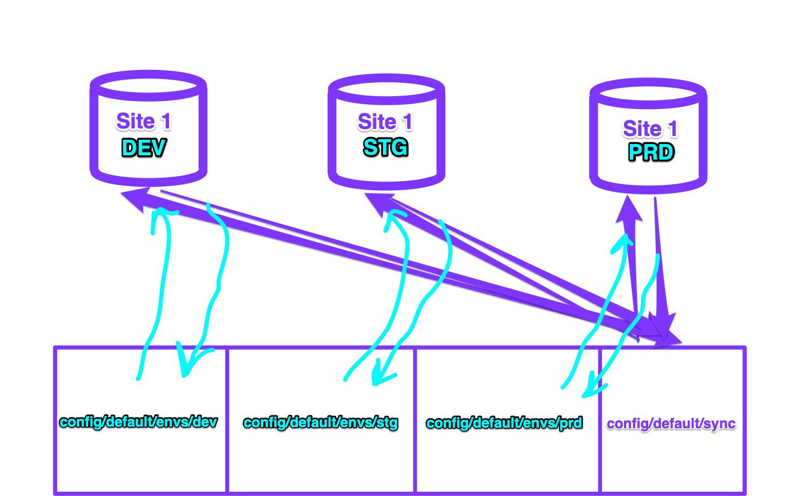2: Profile Splits with Globally Shared Management
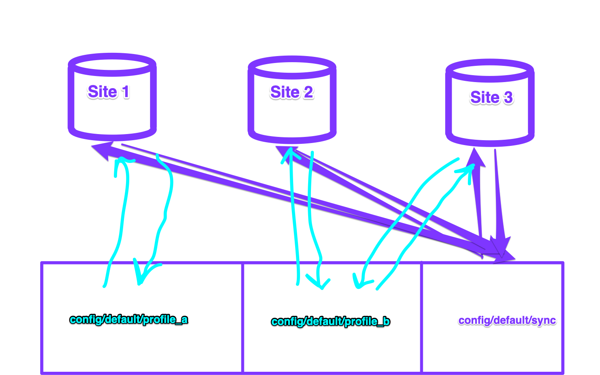3: Site Splits with Globally Shared Management
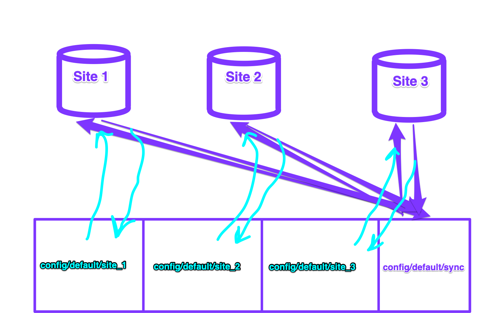4: Site Splits with Profile Shared Management
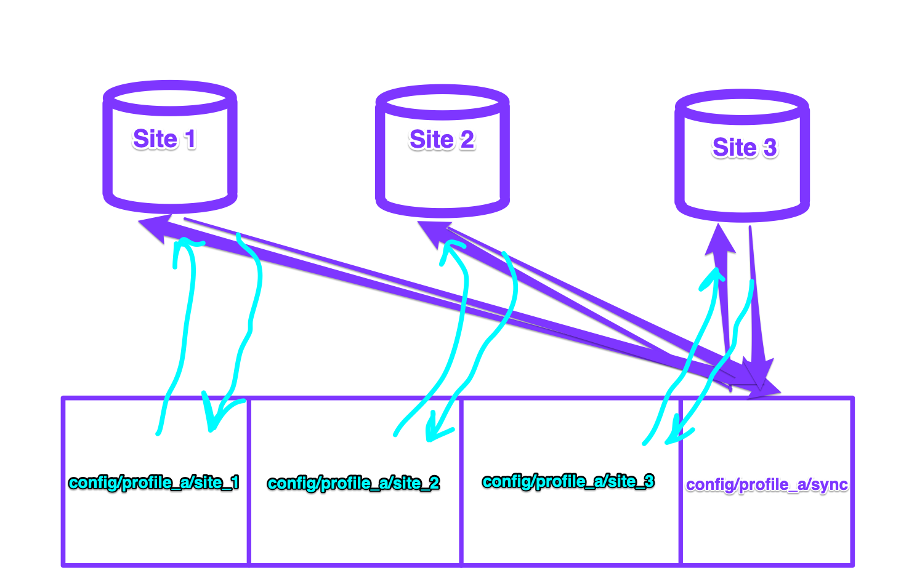You can't talk about config split models without getting into split types...
5 ways a config entity can be split.
With each of the split examples, on a per-module or per-config entity basis you choose between these options:
- No Split (default): The config entity is always in synchronization, it never splits. (default)
- Complete Module Split: The module is only enabled when that split is active, and all of its config entities only exist when the split is active.
- Complete Entity Split: The entity is never in synchronization, it only exists when the split is active.
- Conditional Entity Split: The entity is always in synchronization, it only splits if its different than synchronization.
- Unmanaged: The config entity is never in synchronization or splits, it only exists in the database.
Look at examples with Profile Shared Management and Site Splits
No Split (default)
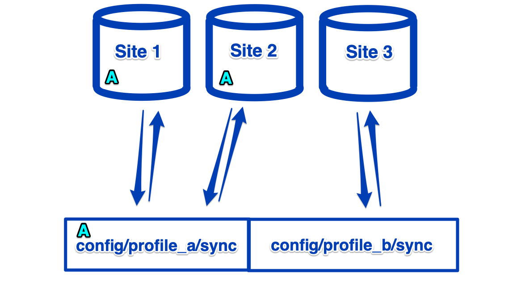All config imports and exports to synchronization directory.
Complete Module Split
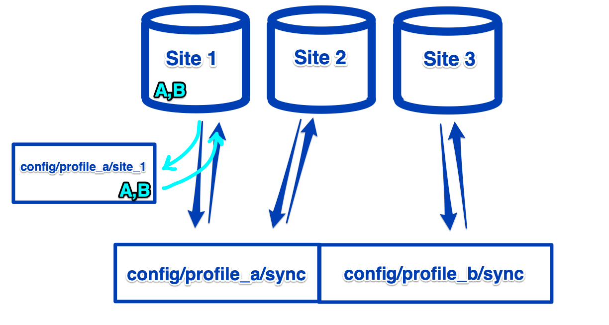Complete Entity Split
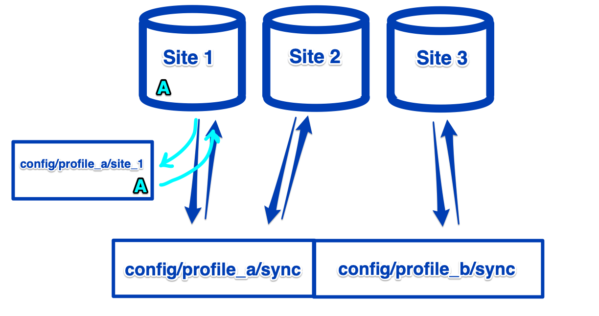Conditional Entity Split
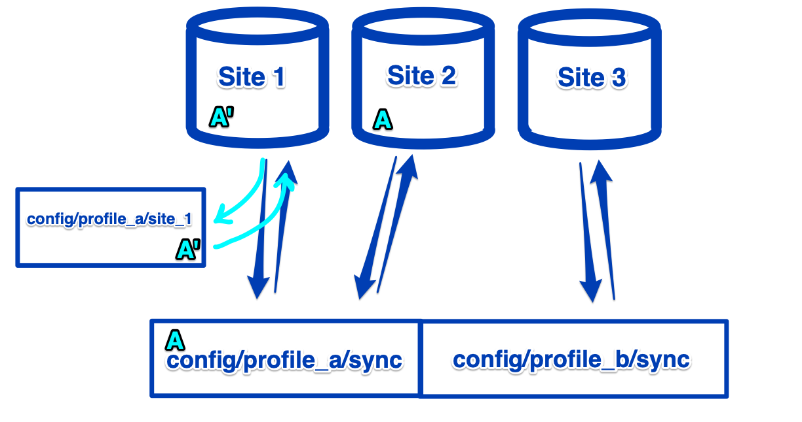Unmanaged
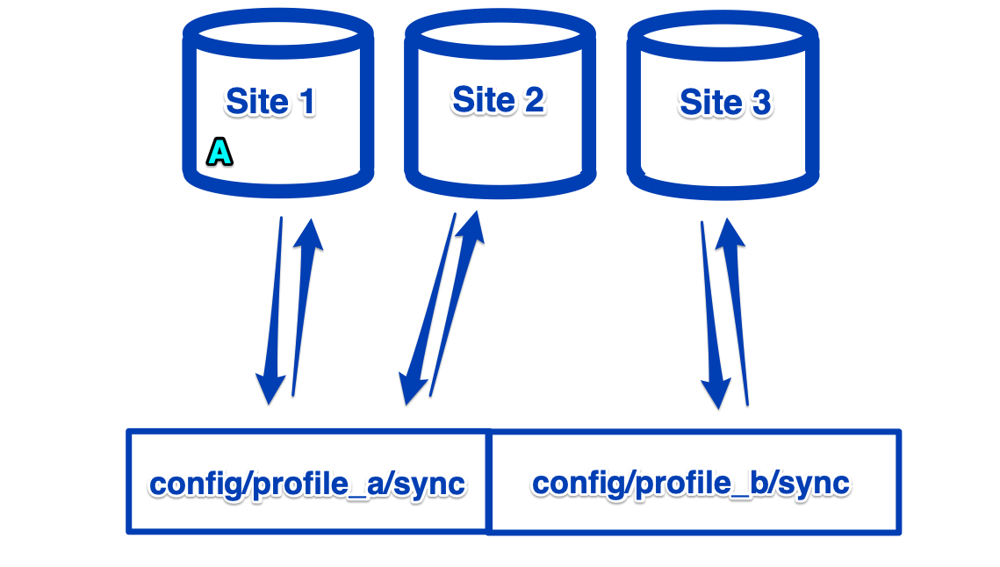III. Challenges In Practice
Which Synchronization Model should you use?
Common gotchas...
UUIDs causing config entity to be re-created. Usually harmless, unless your config is unclean on PROD.
A split is accidentally enabled. Easy workaround is to set all sppt statuses as FALSE in settings.php before your logic to enable them.
How do you decide whether to split a config vs make it managed vs make it unmanaged?
Recap
4 Config Synchronization Models
- Globally Shared Management (default): All sites share the config set.
- Profile Shared Management: All sites of the same profile share the config set.
- Separate Management: All sites have their own config set.
- Unmanaged: No configurations are managed in code.
4 Config Split Models
- Environment Splits: Allows DEV to have different config than PRD.
- Site Splits: Allows sites to have different config than what is in synchronization.
- Profile Splits: Allows all sites of a given profile to have different config than what is in synchronization.
- Module Splits: Allows sites with a given module to have different config than what is in synchronization.
5 ways a config entity can be split.
With each of the split examples, on a per-module or per-config entity basis you choose between these options:
- No Split (default): The config entity is always in synchronization, it never splits. (default)
- Complete Module Split: The module is only enabled when that split is active, and all of its config entities only exist when the split is active.
- Complete Entity Split: The entity is never in synchronization, it only exists when the split is active.
- Conditional Entity Split: The entity is always in synchronization, it only splits if its different than synchronization.
- Unmanaged: The config entity is never in synchronization or splits, it only exists in the database.
Refer back to our decision aids...
Thank you!
Please provide feedback:
events.drupal.org/global2020/sessions/models-configuration-management
Slides are available:
github.com/josephdpurcell
Let's talk! @josephdpurcell